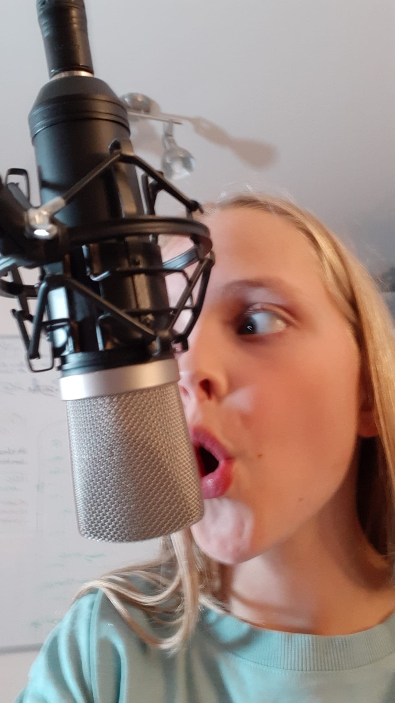
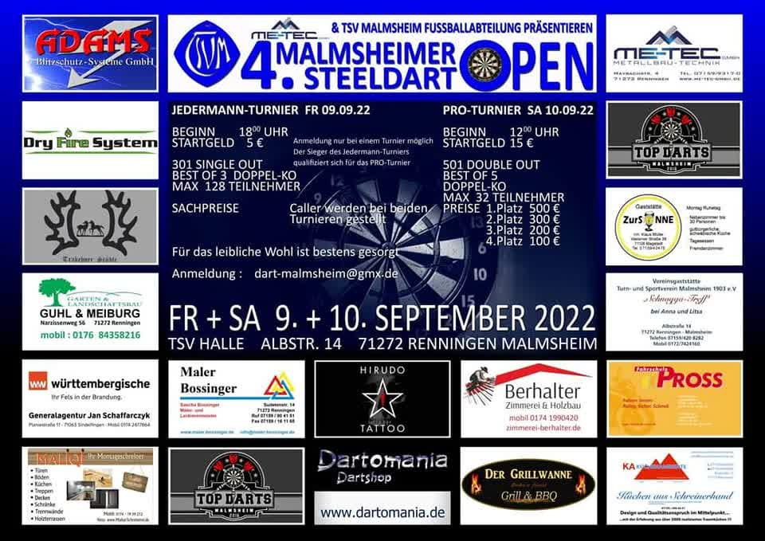
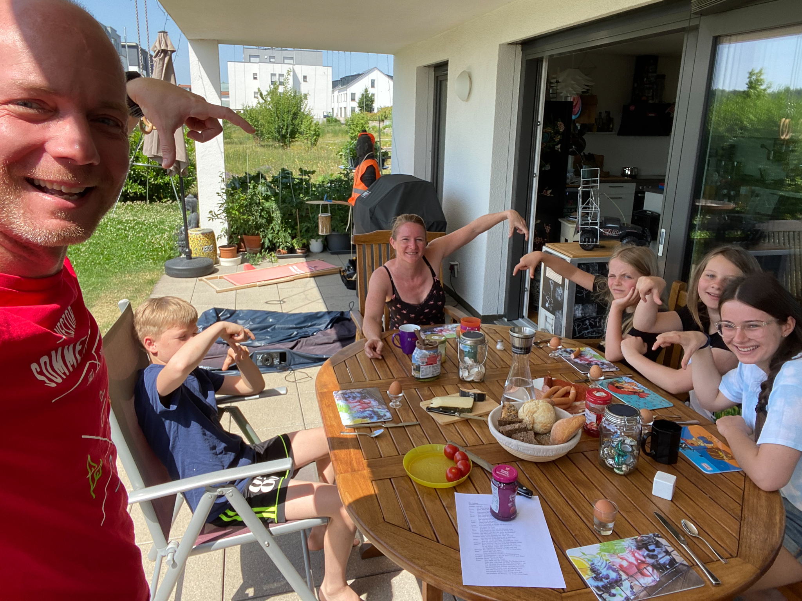
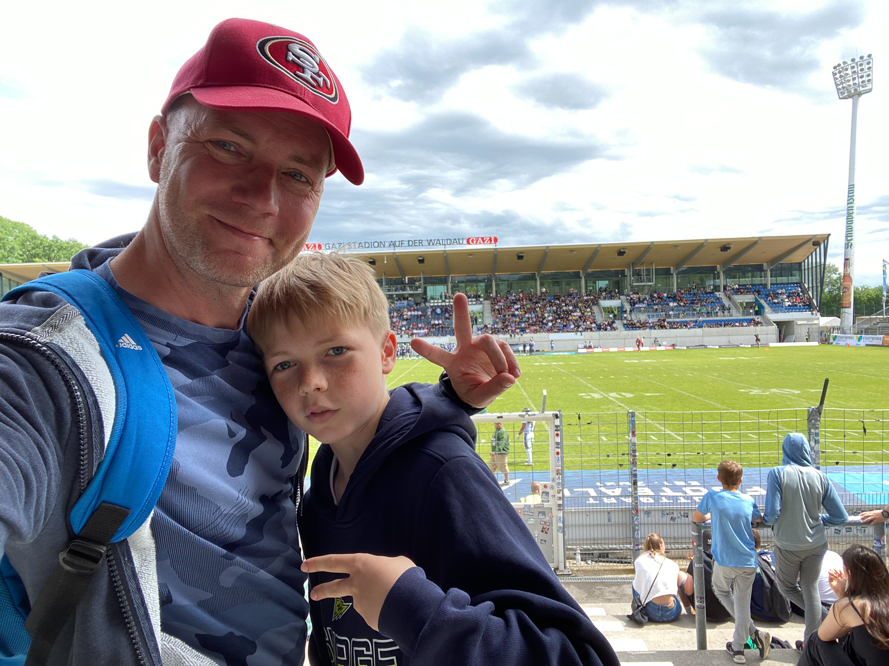
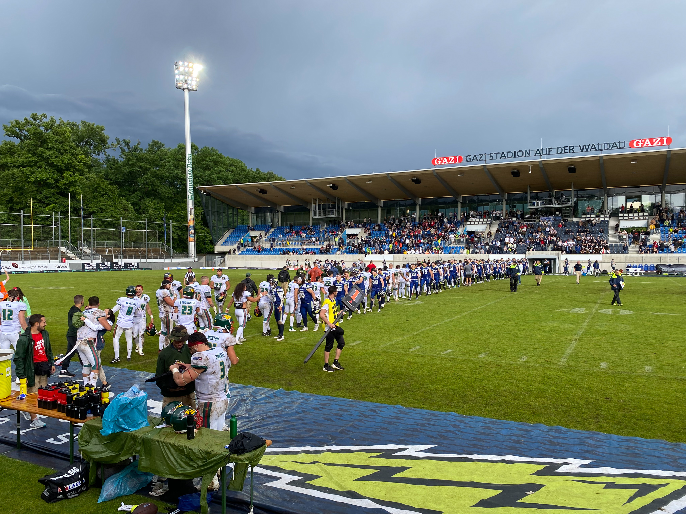
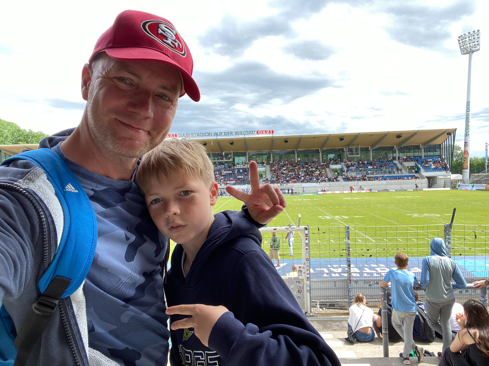
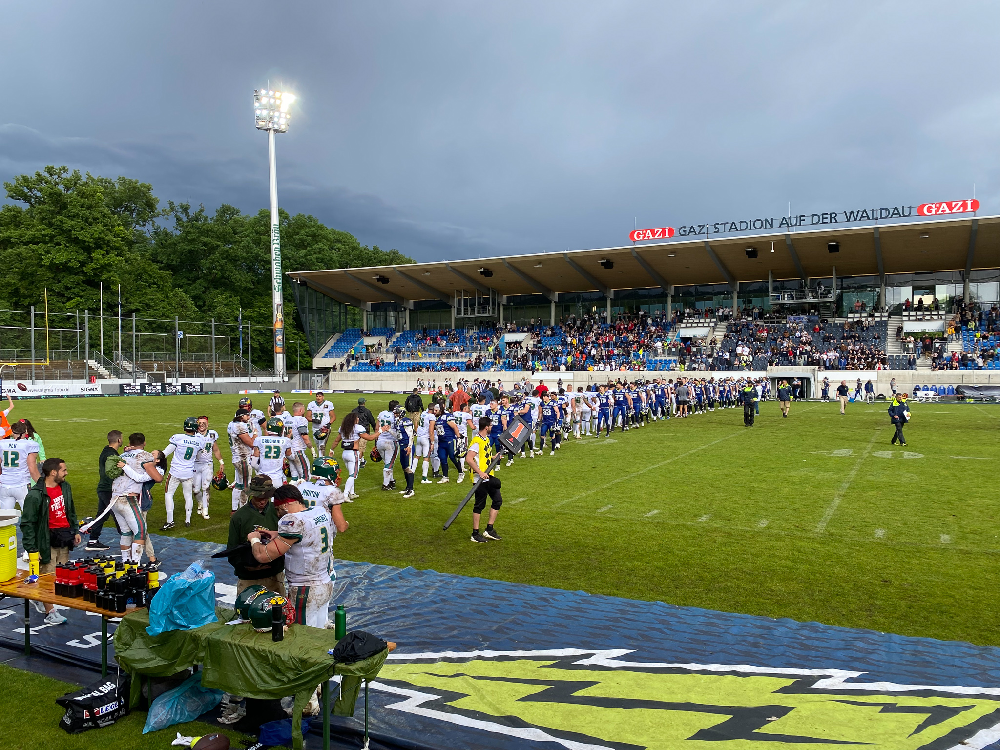

News
25.02.2023 - Das VfB WebRadio: Fußball live auf die Ohren
Super Sache: Der VfB hat jetzt sein eigenes Webradio und bringt Live-Kommentare der VfB Spiele.Den Link findet ihr hier: https://listen.radioking.com/radio/511651/stream/569458
01.12.2022 - Der RegenbogenReich-Adventskalender 2022 steht in den Startlöchern
Allen einen frohen ersten Advent! Heute startet der RegenbogenReich-Adventskalender 2022 auf Youtube :-)Die Folgen sind nicht öffentlich gelistet und sind unter diesem Link zu finden: Klick mich:
Happy Adventskalendern :-)
24.10.2022 - Neues vom Regenbogenreich Radio
Die nächste Live-Sendung "Eric und Eva on Air" gibt es heute, den 24.10.2022 von 19:00 bis 20:00 Uhr!
Wie immer unter: regenbogenreich.eu:8000/stream Außerdem: Es gibt es jetzt eine eigene Rubrik für unser Radio (siehe Links): Webradio
19.10.2022 - Regenbogenreich Radio live vom DFB-Pokelspiel VfB Stuttgart gegen Arminia Bielefeld
versusSendezeit: Heute, 19.10.2022, von 20:45 - Ende, Live aus der Mercedes-Benz Arena in Stuttgart
Das Radio ist wieder zu erreichen unter folgender Adresse: regenbogenreich.eu:8000/stream
Etwas Historie:
Am 1.11.1925 gab es die erste Fußball Liveübertragung überhaupt, zwischen Preußen Münster und der Arminia. Einen Artikel dazu findet ihr hier: Erste-fussball-live-reportage
Fast 97 Jahre später, gibt es die erste Fußball-Liverübertragung vom RegenbogenReich Radio ... und die Arminia ist wieder mit dabei. :-)
Disclaimer: Wir werden direkt aus dem Stadion senden. Daher kann es passieren, dass die zur Verfügung stehende Bandbreite nicht ausreicht, es zu Laut ist, der Akku leer ist oder wir einfach eine Stadionwurst essen. Also: leider keine Garantie, dass es funktioniert.
Hinweis: Die gestriger Sendung, mit zweitweise 10 Hörern, ist mittlerweile als Podcast erschienen (siehe Audiocast-Seite).
18.10.2022 - Regenbogenreich Radio geht on Air :-)
Premiere: Heute, 18.10.2022, von 19:30 - 20:30 - Live Mix mit Eric und Eva

Heißer Scheiß im Oktober: Das RegenbogenReich startet ein Webradio! :-)
Das Regenbogenreich Radio erreicht ihr unter folgender Adresse: http://regenbogenreich.eu:8000/stream
(Click mich) Sollte es nicht funktionieren, dann wird derzeit nichts gesendet. Das Radio kann alternativ zum Webbrowser auch über eine App empfangen werden.
Zu den Webradio-Apps zählen:
Das Radio wird nicht durchgehend senden, sondern wir werden spezielle Programmzeiten und Programmkanäle anbieten. Die Sendezeiten werden wir
bei Matrix/Element veröffentlichen. Viel Spaß beim Zuhören.
09.09.2022 - Darts-Turnier in Malmsheim vom 9.9. bis 10.09.
Info von den Darts-Verrückten des Regenbogenreiches: Diese Wochenende gibt es ein Turnier in Malsheim, für Pros und Jedermann. Vielleicht schaffen wir es, mal vorbei zu schauen.
09.08.2022 - Das RegenbogenReich reist ... eine neue Rubrik im RegenbogenReich ist geboren.
Mehr Informationen findet ihr untem dem Link: Reisen19.06.2022 - Das RegenbogenReich endlich mal wieder vereint
Nach etwas über einem Jahr war das RegenbogenReich endlich mal wieder vereint:emillllll hat uns im RegenbogenReich Hauptquatier besucht, yeah-ha. Die Freund war gross und wir freuen uns schon auf das nächste Mal.
15.06.2022 - Audiocast: Sagt Hallo zu Regenbogenreichs Audiocast/Podcast :-)
Jetzt gibt es auch etwas auf die Ohren, RegenbogenReich goes AudioCast. :-)Neben unserer Homepage (lesen), unseren Youtube-Channels (schauen) bietet das RegenbogenReich jetzt auch einen eigenen Audiocast (hören).
Weitere Informationen findet Ihr auf der eigens dafür eingerichteten Homepage: RegenbogenReich Audiocast
08.06.2022 - RSS: Keine Nachrichten vom RegenbogenReich mehr verpassen mit dem RSS Feed. :-)

RSS, kurz vor Really Simple Syndication, erlaubt die Nachrichten von vielen verschiedenen Webseiten in einer APP anzeigen zu lassen und dadurch
eine Flut an Informationen übersichtlicher zu gestalten und in einer App oder Anwendung zur Verfügung zu stellen. Und nicht zu vergessen:
Um nichts zu verpassen. :-)Um dies zu ermöglichen, wird eine RSS Reader APP oder ein Programm benötigt, welches in regelmäßigen Abständen die RSS Feeds der abonierten Webpages nach Neuigkeiten durchsucht und diese dann entsprechend anzeigt.
Empfehlenswerte RSS Reader aus meiner Sicht sind:
- Android (Google): Flym
- iOS (Apple): NetNewsWire
Installiert einfach einen dieser RSS Reader und aboniert danach den RegenbogenReich Feed. Unter der folgenden Webadresse findet ihr ihn:https://regenbogenreich.eu/rssfeed.rss.
Falls Ihr dabei hilfe benötigt, sagt bitte bescheid. Dann mache ich ein kurzes Video dazu.Viel Spaß beim Lesen und am Ball bleiben.
04.06.2022 - Das RegenbogenReich repariert ... Turbos Bike
Nachdem Turbos Fahrrad letzte Woche in den Bamberger Bergen die Biege gemacht hat, hat sich "RegenbogenReich repariert" dem Fall angenommen.Schnell waren Fahrrad und Ritzel geputzt. Länger dauerte es, die gerissene Kette wieder in Stand zu bekommen, nachdem die alte Kette sich als irreparabel heraus gestellt hatte. Eine neue Kette musste her und wurde dann am nächsten Tag flux angebracht. Eine Testfahrt von Blitzkeko bescheinigte die gelungene Reparatur, ein identifiziertes klappern, zeigte aber auch, dass die Speichen nachgezogen werden mussten. Gesagt getan, aber seht selbst:
05.06.2022 - RegenbogenReich reist ... zum Heimspiel der Stuttgart Surge gegen die Barcelona Dragons
Trotz stellenweise Fritz-Walter Wetter und Joschua als Water-Boy gab es eine 9:38 Klatsche :-( 




15.05.2022 - Das Regenbogenreich ist jetzt auch sicher unterwegs :-)
Die Homepage ist jetzt nicht nur unter http://regenbogenreich.eu erreichbar, sondern auch unter https://regenbogenreich.eu". Ist Euch der Unterschied aufgefallen?Es ist das kleine s bei https das am Ende bei http dazu gekommen ist. Das s steht für "sicher" oder "secure". Wird die Homepage mit https anstelle von http aufgerufen, wird der gesamte Datenverkehr verschlüsselt durchgeführt. Dies ist für niemand anderen lesbar, also sicherer. Die Verschlüsselung ist für eine normale Homepage nicht unbedingt notwendig. Bei Homepages mit persönlichem Login, Passwörtern und so aber unbedingt zwingend erforderlich. Weitere Infos bei Youtube
01.05.2022 - Regenbogenreich reist ... zum Frühlingsfest auf die Cannstatter Wasen
Bei ziemlich gutem Wetter ging es heute auf das Frühlingsfest. Neben Rollercoastern und rumgeballere wurden auch reichlich Schokofrüchte genascht.Reporterin Eva war vor Ort und testet fleissig die eine oder andere Attraktion.


Mehr Informationen zum Frühlingsfest.
30.04.2022 - Minecraft
Update: Der Stream findet leider doch nicht statt. Die Akteure konnten sich mal wieder nicht einigen. :-(Heute werden Blitzkeko und Supermaeh Minecraft zocken und live auf Youtube streamen.
Etwas Hintergrundinformation
Das Regenbogenreich wurde ursprünglich als Idee eines Familienrestaurants von unserem Gründervater Blitzkeko ersonnen. Auch wenn aus einem richtigen Restaurant noch nichts geworden ist, so ist doch die Grundidee lebendig geworden: "Zusammen in der Familie und mit Freunden kreativ sein, Dinge erforschen und ausprobieren".Das Erstellen von Kochvideos, als auch Kochen im privaten Rahmen, ist nach wie vor eines der Hauptaktivitäten. Mit der Zeit haben sich aber auch weitere Themengebiete dazu gesellt. Dies sind aktuell:
- Regenbogenreich Minecraft Server - ein eigener Minecraft Server
- Rainbow Racing - Seifenkiste und RC-Autos bauen und racen
- Regenbogenreich zockt - Youtube Gaming Videos
- Regenbogenreich Technik - Diverse Aktivitäten rund um Technik, wie LED Ketten basteln und steuern, Homepages designen etc ...
- ... und natürlich: Das Restaurant